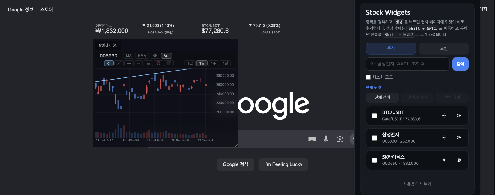
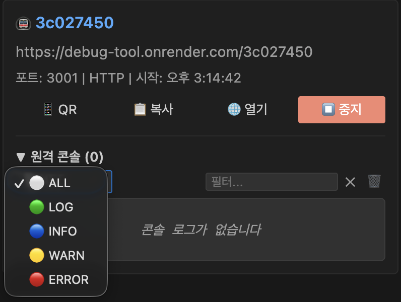
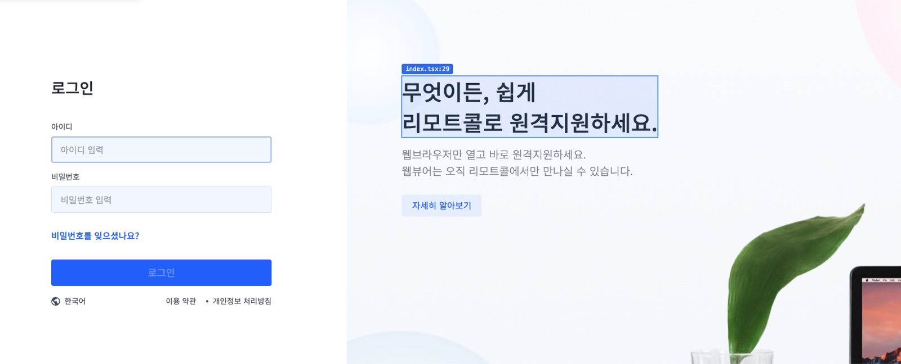

문제: 주식이나 코인 시세를 보기 위해 작업 중이던 페이지를 떠나 거래소 탭으로 옮기거나 휴대폰으로 증권 앱을 확인하는 것이 번거로웠습니다.
해결: 보던 페이지 위에 위젯을 얹어, 거래소에서 WebSocket으로 받은 시세를 그대로 그립니다. 차트를 열면 이동평균과 볼린저밴드, 거래량을 겹쳐 보고 1분에서 1달까지 구간을 바꿉니다. 전송량을 줄이려고 전송 포맷을 직접 설계했고, 구간을 빠르게 바꿔도 멈칫하거나 틀린 값이 남지 않게 캐시, 프리페치, 렌더 가드를 나눠 붙였습니다.
결과: Chrome 웹스토어에 배포해 누적 400회 이상 설치, 사용자 60명, 평점 5.0. 심사와 버전 관리, 사용자 문의를 직접 받고 있습니다.

문제: 웹뷰에서만 재현되는 버그를 볼 때마다 빌드하고 배포해서 폰으로 확인해야 했습니다. 한 번에 2분씩 걸렸고, 콘솔도 안 보여 alert()로 매번 값을 찍어 봐야 했습니다.
해결: 에디터에서 포트 번호만 넣으면 로컬 개발 서버가 공개 URL로 열립니다. 폰에서 그 주소로 들어가면 지금 이 순간의 로컬 화면이 뜨고, 폰 브라우저의 콘솔 출력이 에디터 사이드바로 실시간으로 들어옵니다. 빌드 툴이 번들에 박아 넣은 로컬 주소는 런타임에 교정해서, 앱 코드를 고치지 않아도 실시간 통신까지 그대로 동작합니다.
결과: 실무에 적용해 빌드, 배포 120초 과정을 없앴습니다. 특정 기기에서만 나던 이슈를 그 기기에서 바로 로그를 보며 잡을 수 있게 됐고, 기획자나 디자이너에게 주소 하나만 보내 지금 작업 중인 화면을 확인받으니 피드백이 훨씬 빨리 돌아왔습니다.

문제: 매번 코드베이스에서 "화면의 이 버튼이 어느 파일에 있지"를 찾느라 시간을 많이 썼습니다.
해결: 화면의 요소를 우클릭하면 그 코드가 있는 파일과 줄이 메뉴에 뜨고, 누르면 에디터가 그 위치로 열립니다. 위치를 새로 계산하지 않고, 컴파일러가 이미 계산해 두고 버리는 값을 가로채서 씁니다. 런타임 비용이 없고 개발 빌드에서만 켭니다.
결과: npm에 react-code-locator로 배포해 누적 다운로드 8,700회 이상을 기록했습니다. Vite, webpack, rspack, rollup, esbuild, Next.js를 지원하고, 규격이 달라도 하는 일은 같아서 코어 하나에 어댑터 5개를 붙이는 구조로 정리했습니다.
